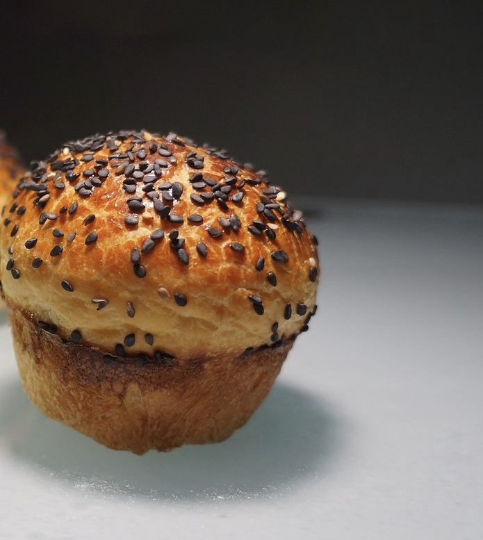

Señora Panadería
Amasamos, fermentamos y horneamos PAN con ingredientes naturales; exaltando sabores de nuestro entorno más próximo, recordando sabores que nos unen y fermentan con Masa Madre.
Nosotros
¡Cocinar para otros es un acto de amor! Esta es la frase que pronunciamos, Juliana y Felipe, en la ceremonia que preparamos al culminar un ciclo muy importante de nuestras vidas por allá en diciembre de 2019.
Ya en 2020, las circunstancias hicieron necesario cocinar para otros: enviar, a la distancia, PAN en forma de recordatorio (estamos juntos). Así nació Señora Panadería: en un acto de amor y de búsqueda.
Queríamos hornear un alimento que nos hiciera felices tras cada mordida. Hoy, en 2022, somos una con una carta de pan que abarca panes con corteza, panes de masa enriquecida (pan blandito) e, incluso, contamos con nuestra versión del clásico germano Strudel de manzana.
Todo hecho con masa madre, que se cultiva desde 2020 con ingredientes 100% naturales.
Nuestra Carta
Punto de Venta
Avenida Carrera 7 # 115- 60 Local 220.
Centro Comercial Hacienda Santa Barbara.
Envíos a domicilio a Bogotá y municipios de la sábana.